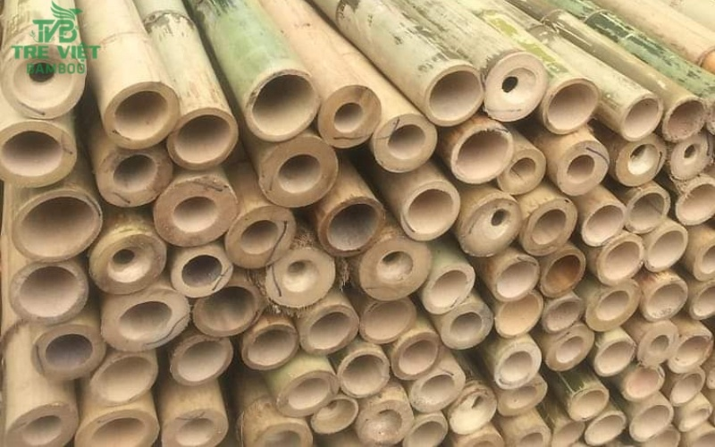
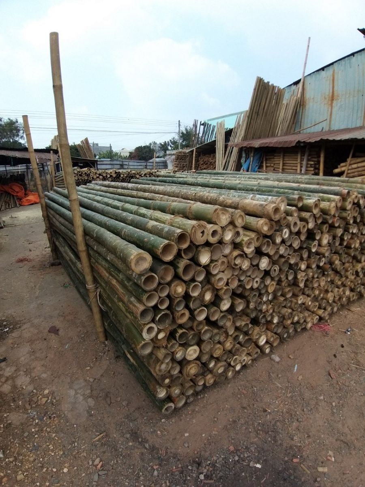
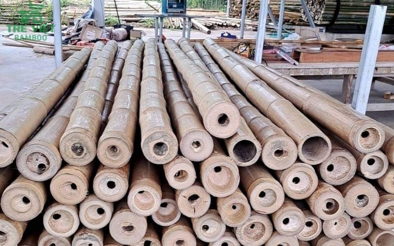
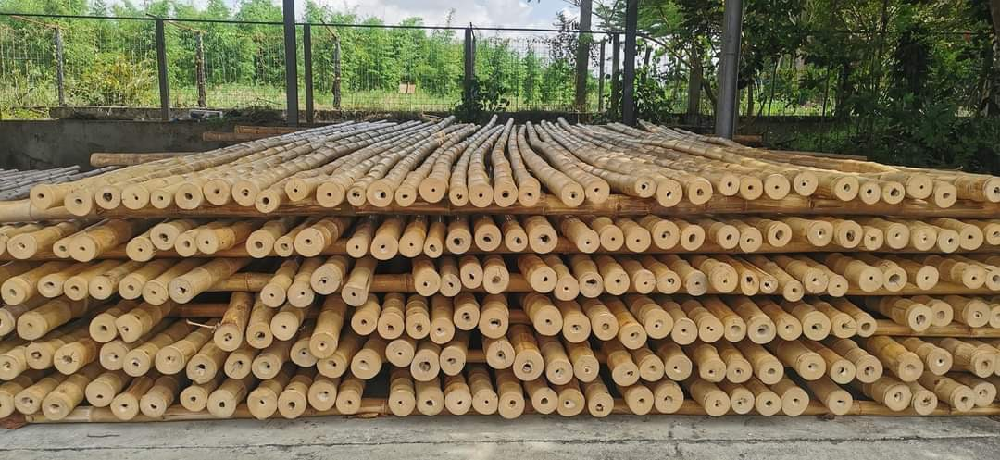
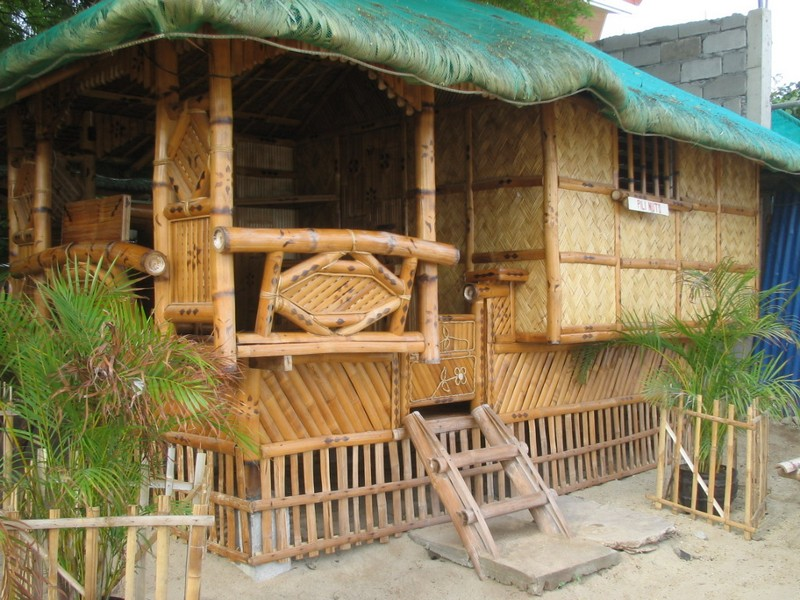
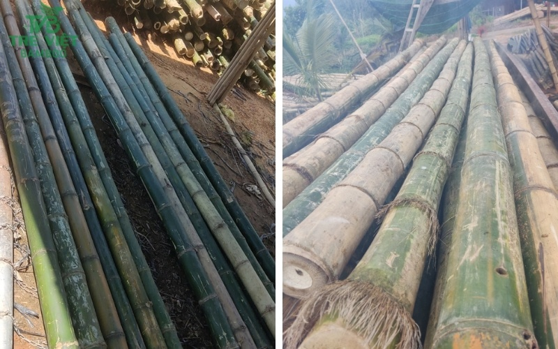

Thông tin dự án
- C
- ây tre luồng có độ bền cao, không thua kém gì các công trình bằng gỗ. Một minh chứng cho thấy điều đó là nhiều ngôi nhà tre ở Nhật Bản tồn tại hơn 200 năm.
- T
- re luồng dễ uốn cong nhưng vẫn đảm bảo được độ cứng cáp nên được mệnh danh là “thép xanh” trong công trình xây dựng.
- T
- re luồng có khả năng không tỏa nhiệt như bê tông mà lại cách nhiệt tốt, giúp giảm nhiệt đáng kể cho không gian nhà ở nên rất phù hợp với vùng khí hậu nóng ẩm ở nước ta.
- T
- re luồng hình ống nhỏ gọn, có khả năng ứng dụng linh hoạt.
- T
- re luồng thuộc vật liệu thân thiện với môi trường, mang đến không gian xanh trong cuộc sống.
- G
- iá thành khi mua tre luồng cũng sẽ thấp hơn so với những loại vật liệu khác.
- X
- ây dựng nhà bằng tre luồng mang đến nét văn hóa dân tộc, nét độc đáo riêng biệt cho không gian sống.
Cây Tre luồng trong xây dựng nhà ở
Được xem là loài tre có độ cứng cao nhất trên thế giới, cây tre luồng đã trở thành vật liệu trong xây dựng nhà ở hiện nay thay cho gỗ, sắt, thép,… Vậy trong xây dựng nhà ở, cây tre luồng được ứng dụng thiết kế những gì? Hãy cùng tham khảo bài viết dưới đây cùng Tre Việt Building để giải đáp được thắc mắc này nhé!
Tre luồng làm vật liệu xây dựng nhà ở
Tương tự như thiết kế và xây dựng khung gỗ thông thường, tre luồng cũng được ứng dụng để xây dựng được thực hiện bằng kỹ thuật khung kết cấu.
Một số sản phẩm xây dựng nhà ở bằng tre luồng:
Cũng tương tự như những loại vật liệu xây dựng khác, tre luồng có thể được ứng dụng để xây tường tre, trần tre, vách tre, giàn giáo tre, cầu thang tre, cửa sổ, cửa nhà bằng tre,…

Tre luồng được xem là một loại vật liệu xanh ứng dụng trong công trình xây dựng nhà ở.
Ốp tường bằng tre luồng
Những ai yêu thích phong cách cổ điển, đơn giản có thể ứng dụng làm tường bằng tre. Khi xây dựng tường tre luồng các thân tre sẽ được liên kết với nhau bằng mối nối để tạo thành mảng tường có khả năng chịu lực tốt và chắc chắn.
Các thanh tre luồng sẽ được cố định và một lớp đệm được sử dụng giữa các yếu tố khung giúp tăng cường độ và sự ổn định cho các bức tường tre.

Ốp tường tre luồng là một trong những phong cách mang xu hướng cổ điển, thiên nhiên cho nhà ở.
Ốp trần bằng tre luồng
Làm trần nhà bằng tre luồng mang lại độ bền chắc cao. Tre luồng có trọng lượng nhẹ nên dễ dàng thực hiện và nhờ có độ dẻo dai nên có thể thiết kế theo nhiều kiểu dáng khác nhau tùy theo sở thích mỗi người.
Vách tường bằng tre luồng
Tương tự như ốp tường tre luồng, vách tường tre luồng là kết cấu của các thanh tre được cố định bằng các mối để tạo thành mảng.
Không nhất thiết phải đặt khít các thanh tre luồng với nhau tạo vách, bạn có thể tạo hình khối vuông, hình đan xen,… tùy theo phong cách ngôi nhà mà bạn muốn hướng tới để tạo nên điểm nhấn cho không gian sống của mình.

Bê tông cốt tre luồng
Bê tông tre hay tre luồng là sản phẩm kết hợp tre cùng các nguyên vật liệu xây dựng trong quá trình đổ bê tông.
Bê tông cốt tre luồng chính là sự liên hợp giữa bê tông cùng lõi bằng tre luồng và sử dụng các nguyên vật liệu khác như cát, xi măng, nước,… cùng một số phụ gia khác.
Về áp dụng cho công trình xây dựng, nên ứng dụng bê tông cốt tre vào các công trình không đòi hỏi quá cao về độ bền, phù hợp với các công trình có quy mô nhỏ. Đây được xem là giải pháp đối với những trường hợp có nguồn kinh tế thi công hạn hẹp.

Bê tông cốt tre luồng phù hợp với các công trình có quy mô nhỏ giúp tiết kiệm kinh phí xây dựng.
Lợi ích khi xây nhà ở bằng cây tre luồng

Xây dựng nhà bằng vật liệu tre luồng mang lại nhiều lợi ích từ độ bền cho đến tính thẩm mỹ cao.
Một số lưu ý khi xây dựng nhà bằng tre luồng
- Cần xử lý kỹ các vấn đề côn trùng, mối mọt làm hại tre luồng trước khi đưa vào sử dụng.
- Vì có lớp chống thấm nước nên việc sơn lên tre luồng sẽ gặp khó khăn. Dùng loại sơn đặc biệt, sử dụng riêng cho vùng trơn bóng, ít bắt dính.
Chọn mua tre luồng xây dựng nhà ở đâu tốt nhất tại TPHCM?
Bạn đang có ý định và muốn xây dựng nhà ở bằng tre luồng chất lượng với giá cả cạnh tranh tại TPHCM thì Tre Việt Building là địa chỉ uy tín đáng để tham khảo.

Tre việt Building là cơ sở uy tín chuyên cung cấp các loại vật liệu tre trong đó có tre luồng đạt chất lượng và giá cả cạnh tranh.
Tre Việt Building được đánh giá là cơ sở cung cấp tre luồng tươi và tre luồng khô đảm bảo về mặt chất lượng và giá cả phù hợp. Quý khách hàng đến với Tre Việt Building sẽ được các nhân viên hỗ trợ tư vấn miễn phí, được mua tre luồng giá rẻ và chất lượng.
Để nhận báo giá cây tre luồng thì hãy liên lạc với chúng tôi ngay hôm nay qua số Hotline: 093.123.5757
Xây nhà bằng cây tre luồng hiện đang là xu hướng mới lạ, độc đáo mà bạn nên tham khảo để áp dụng cho công trình nhà ở tương lai. Hy vọng với những thông tin trong bài viết bên trên được chia sẻ bởi Tre Việt Building đã giúp bạn có thể nhận thấy được giá trị của cây tre luồng trong việc ứng dụng xây dựng công trình nhà ở.
Tre Việt Building – Cùng Thiên Nhiên kiến tạo cuộc sống hạnh phúc
Thông tin liên hệ:
CÔNG TY TRÁCH NHIỆM HỮU HẠN TRE VIỆT
BUILDING
Địa chỉ: 917 Phạm Văn Đồng, Phường Linh Xuân, Thành phố
Hồ Chí Minh
Nhà máy sản xuất: Phú Hợp B, Xã Phú Lâm, Đồng Nai.
Website: tretruc.com.vn
Điện thoại – Zalo: 093.123.5757
Email: info@treviet.com.vn – treviet23@gmail.com